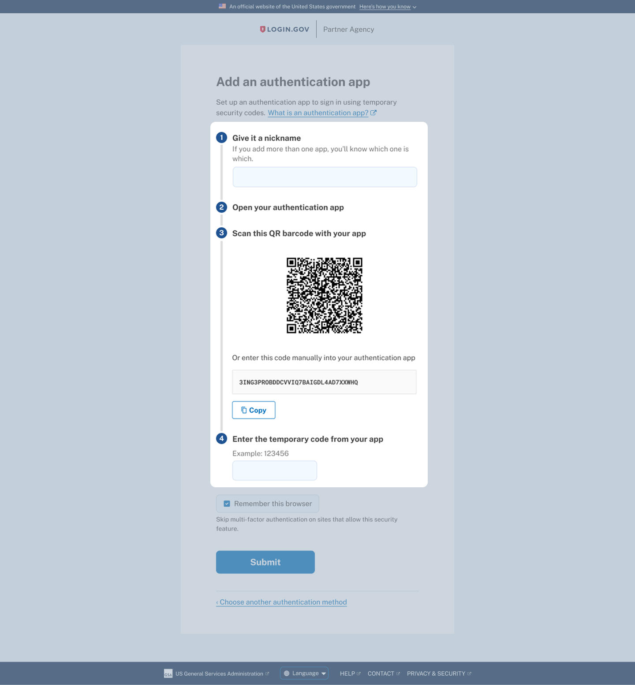

Login.gov
Product • UX Research • Animation
Preventing phishing of Login.gov accounts is crucial to protect both partner organizations and user data, as compromised accounts can risk funds, sensitive information, and systems. Our team aimed to increase the use of phishing-resistant authentication methods such as passkeys, government employee IDs, and security keys, as a primary goal for 2024.
As of November 2023, only 12% of active users employed phishing-resistant methods, with 78% relying on phishable SMS one-time passcodes. By February 2024, just 66% of security key users successfully authenticated within two weeks. Enhancing the adoption of phishing-resistant multi-factor authentication (MFA) depends on creating a seamless and user-friendly experience for security key integration.
We sampled 1,298 support tickets between January 21, 2023 to January 20, 2024 and found three key themes:
Issues with the original security key setup page included a vague H1: "Add your security key", which wasn't specific enough to the authentication method since all the other methods used the same language of "add x method". The paragraph below the H1 mentions FIDO standards which is not an important detail for the average user, adding to technical information overload.
In addition, once the user clicks "Continue" they are met with whichever passkey setup modal their browser features.
Chrome and Edge lead with a QR code, prompting users to scan it with their mobile device. The security key icon and text is diminished in these examples, adding to user confusion and making it less likely that they will be successful in setting up a security key.
Safari and Firefox fare slightly better since they give equal weight to mobile passkeys and security keys. Windows is by far the best since it focuses on solely setting up a security key.
The first round of updates I made came in content changes throughout the setup page. This included an update to the H1: "Insert your security key into your computer's USB port" (mobile devices say "phone's port"). This update made the text more specific and actionable over the original H1: "Add your security key".
I also added a link out to the relevant help article in case users needed more guidance or information for setting up or authenticating with their security key. Updated name label and CTA copy also utilized more specific language.
After the first set of improvements, I felt there was an additional opportunity to use our process list to break down the steps (pictured below is our authentication app setup page). I also thought we could create an illustration or an animation to further build user understanding.
Below is my design of the updated security key setup page. I reordered and edited the content and hierarchy: enter a nickname, see an animation of how to use a security key, and finally directed users to click the "Set up security key" CTA.
Using the Figma plugin, SVG Animate, I was able to make an animation that demonstrates what a security key looks like and how to use it to authenticate.
The version below illustrates how a user should insert their security key into their mobile device.
Following the initial implementation, we looked at trends for the security key setup page following our content changes throughout April 2024. What I read here is:
© Mostyn Griffith 2024